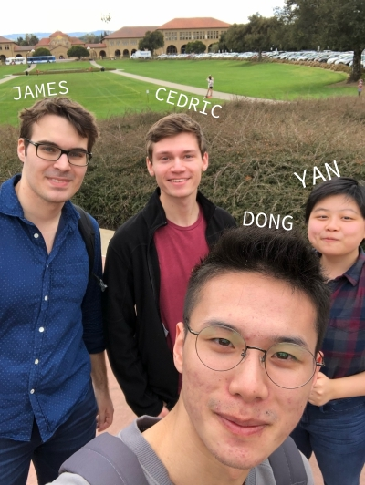

<!DOCTYPE html>
<html lang="en">
  <head>
    <title> 2018 Tech Safari | Project Torus </title>
    <meta charset="utf-8"> 
    <meta name="viewport" content="width=device-width, initial-scale=1">
    <link rel="stylesheet" href="https://unpkg.com/leaflet@1.3.1/dist/leaflet.css"
    integrity="sha512-Rksm5RenBEKSKFjgI3a41vrjkw4EVPlJ3+OiI65vTjIdo9brlAacEuKOiQ5OFh7cOI1bkDwLqdLw3Zg0cRJAAQ=="
    crossorigin=""/>
    <script src="https://unpkg.com/leaflet@1.3.1/dist/leaflet.js"
    integrity="sha512-/Nsx9X4HebavoBvEBuyp3I7od5tA0UzAxs+j83KgC8PU0kgB4XiK4Lfe4y4cgBtaRJQEIFCW+oC506aPT2L1zw=="
    crossorigin=""></script>
    <link rel="stylesheet" href="css/map.css"/>
    <link rel="stylesheet" href="src/L.Control.Sidebar.css" />
    <link rel="stylesheet" href="https://cdn.jsdelivr.net/npm/leaflet-easybutton@2/src/easy-button.css">
    <script src="https://cdn.jsdelivr.net/npm/leaflet-easybutton@2/src/easy-button.js"></script>
    <link rel="stylesheet" href="leaflet.markercluster/dist/MarkerCluster.Default.css"/>
    
</head>
    <body>
        <div id="mapid"></div>
        <div id="sidebar"></div>
        <script src='https://api.mapbox.com/mapbox.js/plugins/leaflet-omnivore/v0.2.0/leaflet-omnivore.min.js'></script>
        <script src="src/L.Control.Sidebar.js"></script>
        <script src="leaflet.markercluster/dist/leaflet.markercluster-src.js"></script>        
        <script> 

            // icon definitions
            let starIcon = L.icon({
                iconUrl: 'imgs/star-icon.png',
                iconSize: [28, 28]
            });
            let pointIcon = L.icon({
                iconUrl: 'imgs/point-icon.png',
                iconSize: [12, 12]
            });

            // creating the map and setting the view
            let map = L.map('mapid').setView([37.5585, -122.2711], 10);
                L.tileLayer('https://api.tiles.mapbox.com/v4/{id}/{z}/{x}/{y}.png?access_token={accessToken}', {
                attribution: 'Map data &copy; <a href="http://openstreetmap.org">OpenStreetMap</a> contributors, <a href="http://creativecommons.org/licenses/by-sa/2.0/">CC-BY-SA</a>, Imagery © <a href="http://mapbox.com">Mapbox</a>',
                maxZoom: 19,
                id: 'mapbox.streets-basic',
                accessToken: 'pk.eyJ1Ijoib25leWFuc2hpIiwiYSI6ImNqZW95Z3hxdzVneHMzMmxuYjhtaDd2eHoifQ.kK_SOwEna8uNRf0ITlkesA'
            }).addTo(map);

            // creating an instance of the sidebar 
            let sidebar = L.control.sidebar('sidebar', {
                position: 'left',
                closeButton: true
            });                

            // attach sidebar to map 
            map.addControl(sidebar);

            // Add menu button to open sidebar with project description
            L.easyButton('<span id="info-button">?</span>', function() {
                sidebar.setContent("<h1>Tech Safari | Project Torus</h1>\
                <h2>Explore with Us</h2>\
                <p>On March 11, four students and their professor embarked on a trip to learn about innovation\
                on the West coast during their spring break.</p><p>We visited Stanford's Product Realization Lab and explored\
                the campus by going on a scavenger hunt. We went to an accelerator for start-ups, Oracle, met a Google engineer, and \
                so much more on this trip–it's a bit unbelievable.</p>\ <p>There was so much to do, so much to see, all in one week. \
                During our exploration, we collected weather data as well as our GPS data so that we can map out our adventure. \
                </p>\
                ");
                sidebar.toggle();
            }).addTo(map);

            // create an instance of marker cluster 
            let markerGroups = L.markerClusterGroup({
                spiderfyOnMaxZoom: false,
                showCoverageOnHover: false,
                disableClusteringAtZoom: 19
            }); 

            // eat the csv file --> burps out 
            omnivore.csv('data/all_days.csv').on('ready', function(layer){ 
                // do some things w/ the marker layers before adding to the map 
                this.eachLayer(function(marker){ 
                    if(marker.toGeoJSON().properties.description == undefined){ 
                        // if there's nothing in description, set standard point icon
                        marker.setIcon(pointIcon);
                        markerGroups.addLayer(marker); 
                    }else{
                        // else, set the icon to a star 
                        marker.setIcon(starIcon);
                        // then when there is a click, do this w/ the sidebar 
                        marker.on('click', function(){ 
                            sidebar.setContent(marker.toGeoJSON().properties.description); 
                            sidebar.toggle(); 
                        })
                        marker.addTo(map)
                    }
                })
            });

            // add layers for marker groups 
            map.addLayer(markerGroups); 
            
            map.on('click', function () {
                sidebar.hide();
            });

        </script> 
        </body>
</html>